Prof. Bharat Sambhu Chaudhari
Senior Professor (HAG) and Dean - Research and Development
AIoT, TinyML, LPWANs, Si-Photonics, Optical Networks, Switching & Routing Technologies
Senior Professor (HAG) and Dean - Research and Development
AIoT, TinyML, LPWANs, Si-Photonics, Optical Networks, Switching & Routing Technologies

HOD, Professor
Environmental and Sustainable Engineering M.E.Construction Management


Assistant Professor & Program Coordinator (M.Tech Medical Devices)
Dr. Raj Agarwal, Program Coordinator of the M.Tech in Medical Devices and Assistant Professor in the Department of Bioengineering, School of Engineering & Technology at MITWPU, is an accomplished researcher and innovator. He holds Master…

Associate Professor and Program Coordinator (ECE)
RF, Microwave and Antennas, Wireless Communications, Software Defined and Cognitive Radio, Television Engineering

Program Director
Enhanced Oil Recovery (EOR),Artificial Lift Systems, Petroleum Produced Water Treatment, Drilling and Well Design

Program Director & Associate Professor
Environmental Engineering, Advanced Separation processes, Material science, Energy

Professor & Program Director
NVH, Condition Monitoring, FEA, Acoustics and Vibration, System Modelling, Bio Mechanics


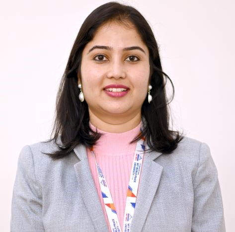
Program Director
Biomaterials, Bioenergy, Electrochemical devices, Biosensors, Microbial Electrolysis, CO2 conversion

Program Coordinator (Chemical) & Assistant Professor
Flow Assurance, Biofuels, Biopolymers, Education

Program Coordinator (MS & E) & Associate Professor
Green Technology, Polymer Materials and Structure Property Relationship, Rheology of polymeric systems, Microwave Assisted Reactions, Natural Waste based Product Development

Associate Professor and Program Coordinator (R&A)
Design, Composite Material, Robotics, Mechatronics

Associate Professor and Program Coordinator(E & CE)
: Power Electronics, Electric Machines, Robotics, Electric Vehicles Technologies, and Renewable Energy Systems.

Professor Emeritus and Director Research
Prof. Dr. Radhakrishnan Subramaniam is dedicated to cultivating strong foundational knowledge and fostering a deep interest in the subject among students. He strives to create an academic environment that encourages innovative thinking and…

Professor
Material Characterization, Advanced Manufacturing Processes


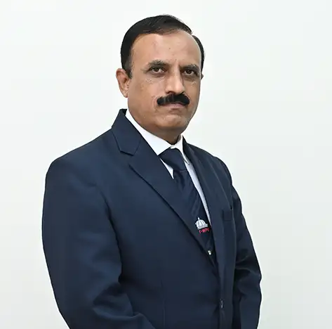


Professor
1. Structural Analysis and Design, Application of Finite element Method for structural design, RCC structures. 2. Digital Architecture, Engineering design of implants, prosthesis. Application of Digital Methods in Civil Engineering and…

Professor
Heat Exchanger, HVAC, Cryogenic Engineering, Thermal Insulation, Heat Pipe and Heat Transfer Applications......... but not limited to"

Professor
Dr. Kundlik Mali is a Professor and AHoS in the field of Mechanical Engineering. He earned his Ph.D. in Mechanical Engineering from SPPU Pune in 2014 and completed his M.Tech. from COEP Pune. His expertise lies in the field of Thermal…

Professor
Professor in Civil Engineering, National tour, Industry-Institute, Discipline Coordinator, MIT WPU, Pune. LMISTE, LMSEA

Professor
Samarth D. Patwardhan serves as Head of Centre for Subsea Engineering Research (CSER), and Professor in the Department of Petroleum Engineering at MITWPU, Pune, India. His research interests include production and reservoir engineering,…

Professor
Prof. Sandeep Potnis has more than 35 years of teaching and industrial experience. He is Head of Tunnel Engineering program at MIT WPU. Seven research scholars are pursuing Ph.D. in Tunnel Engineering under his guidance. Three scholars…

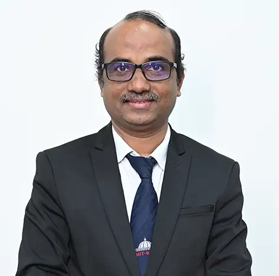
Professor and Director Doctoral Programme
Signal Processing, Communication

Associate Professor
Image/Video Processing, Biomedical Engineering, Programming/Coding
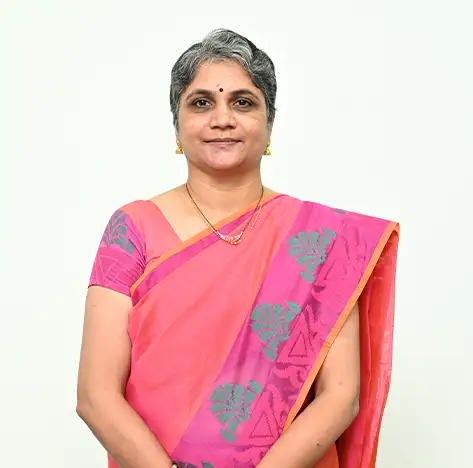

Associate Professor
Engineering Design, Design Thinking, Computational Fluid Dynamics, Tribology

Associate Professor
Additive manufacturing, Vacuum and Investment Casting
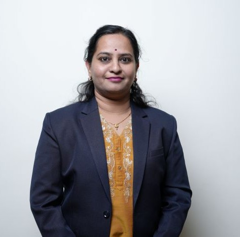
Associate Professor
Dr. Minal Deshmukh is an Associate Professor in the Department of Chemical Engineering at MIT-WPU and has been associated with the institution for the past 15 years. She brings over 17 years of combined teaching and industry experience.…

Associate Professor
Nanofluid Heat Transfer, Adsorption Technology, Battery Thermal Management System, Biofuels, Electronic Devices Cooling, Renewable and Sustainable Energy

Associate Professor
Bio-mechanical Engineering, Medical Devices, Vibration and Fatigue, FEA

Associate Professor
Dr. Vikrant Devidas Gaikwad is a distinguished academic leader with over 26 years of experience in advancing educational excellence and institutional growth. As Dean–Academics at Dr. Vishwanath Karad MIT World Peace University, he has…

Associate Professor
Al/ML applications in mechanical engineering, Composite materials & structures,Optimization techniques, Design Thinking , Product design

Associate Professor
Dr. Nivedita Gogate is currently working as an Associate Professor in the Department of Civil Engineering, Dr Vishwanath Karad MIT World Peace University, Pune from 2018. She joined the MIT-WPU in 1996 and since then she has been…

Associate Professor and Director, Career Development Centre (CDC)
Automotive Electronics, Computer Vision
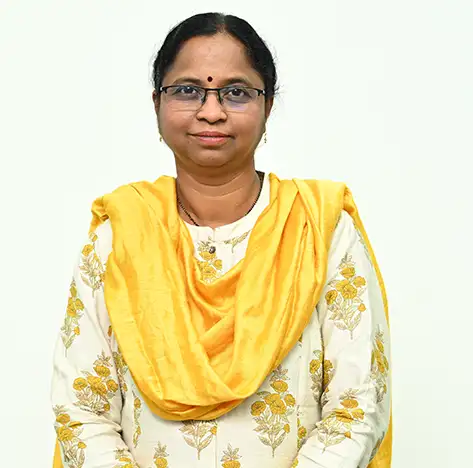
Associate Professor
Computer Vision, Digital Image Processing, Transducer and Signal Conditioning, Robotics and Automation, Mechatronics

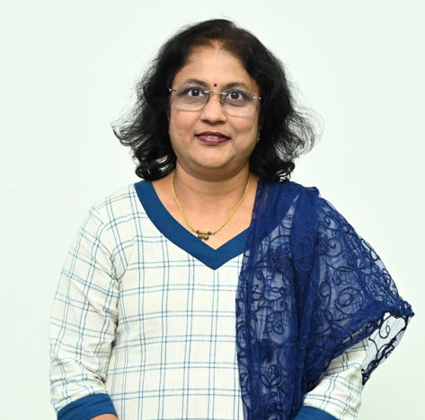

Associate Professor
1. Affordable production of Green Hydrogen through thermochemical as well as bio-digetion routes 2. BioCNG from mixed agro-waste, particularly from millet crop residues 3. Delayed release Smart Bio-fertilizers 4. Health devices for Green…


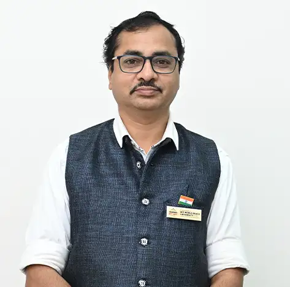
Associate Professor and Director Admissions
Dr. Prakash Mohan Mainkar obtained his Bachelor's degree in Electronics Engineering from Shivaji University in 2001, followed by a Master's degree in Electronics (VLSI Design) in 2007. He later completed his Doctor of Philosophy…

Research and Ph.D. Coordinator School of Engineering and Technology, Associate Professor and Ph.D. Coordinator
Embedded Systems, Biomedical Engineering Embedded Systems, IoT


Associate Professor
Image Processing, Machine Learning, Embedded System Design

Associate Professor
Power System Protection, Artificial Intelligence, Power Electronics

Associate Professor
Mobile Communication, Wireless Communication, Computer Networks,IoT... Wireless Communication, IOT

Associate Professor
heat transfer equipments, nanofluidics/nanomaterial, EV (BTMS/Fuel cell),Healthcare ,energy ,Operations research
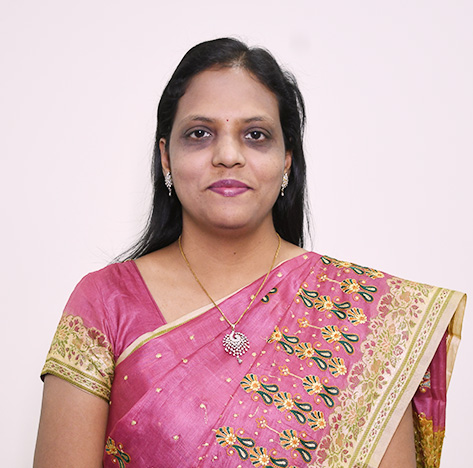

Assistant Professor
Prof. Vrunda Agarkar is working as an Assistant Professor at the Department of Civil Engineering at Dr. Vishwanath Karad MIT World Peace University, Pune. She is presently pursuing her PhD with SVNIT, Surat. She received her BE (Civil)…

Assistant Professor
Dr. Ankita Agarwal is an experienced academician and researcher who holds a PhD in Computational Biology from IIT Kharagpur and Gold medal in M. Tech. (Bioinformatics) from West Bengal University of Technology. With a background in…

Assistant Professor
Stress Analysis, Failure Analysis, Corrosion and Wear Analysis, Mechanical Engineering Design, Mechanical Vibrations, Biomechanics, Energy Harvesting, Nano technology


Assistant Professor
Dr. Alka Surendra Barhatte is an Assistant Professor in the Department of Electrical and Electronics Engineering at MIT World Peace University, Pune. She graduated in Electronics Engineering from Dr. Babasaheb Ambedkar Marathwada…

Assistant Professor
It seems like Dr. Barhatte has had a long and varied career at MIT-WPU. He began as a lecturer in 2007, bringing with him a decade of industry experience. Over the years, he has taken on several roles within the Mechanical Engineering…


Assistant Professor
1. Corrosion in reinforced concrete structures 2. Durability and service-life assessment of concrete 3. Sustainable and low-carbon concrete materials 4. Ultra-High-Performance Concrete (UHPC) 5. Microstructural and electrochemical…

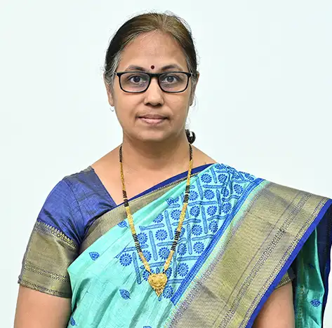

Assistant Professor
1. Macro & Micro mechanics of concrete 2. The durability of concrete structures 3. Green building materials 4. Material optimization 5. Waste utilization and sustainability studies 6. Concrete composites

Assistant Professor
Prof. Dr. Shahbaz Dandin is an Assistant Professor in the Department of Civil Engineering at MIT WPU, Pune, India. He completed his B.E in Civil Engineering from VTU, Belgaum in 2012, M.Tech in Geotechnical Engineering from Govt.…

Assistant Professor
Dr. Soubir Das holds a Ph.D. in Petroleum Engineering from IIT (ISM) Dhanbad, specializing in the development of clay-free drilling fluid systems for gas hydrate-bearing formations. His research focused on formulating low-dosage hydrate…

Assistant Professor
Peeling and Fatigue Behavior of Adhesively Joint Different Biopolymers.


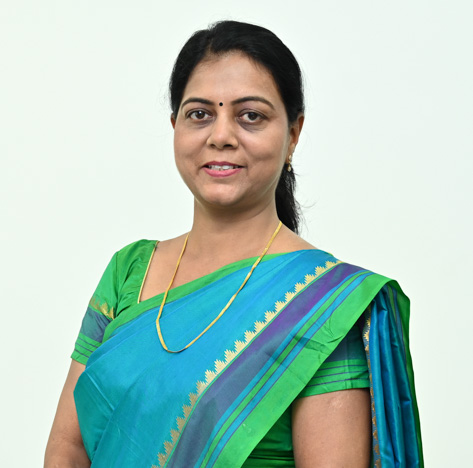
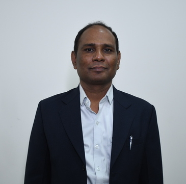
Assistant Professor and Assistant Director, Admissions
Photonic Integrated Circuit, Unmanned Aerial Vehicle, Image Processing, Optical Character Recognition.
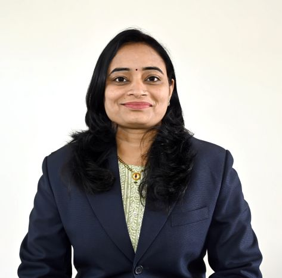
Assistant Professor
Dr. Savitri N. Jadhav is an Assistant Professor in the Department of Electrical and Electronics Engineering with over 18+ years of academic and research experience. She completed her Ph.D. from Savitribai Phule Pune University in 2022.…

Assistant Professor
"Incremental Sheet Forming, Additive Manufacturing, CAD/CAM, Manufacturing Engineering"

Assistant Professor
Material Science, Additive manufacturing, Engineering Metallurgy
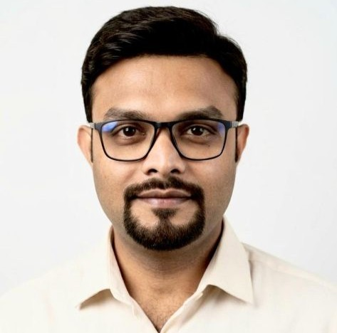
Assistant Professor
Dr. Nikhilesh Joardar, M.Sc., Ph.D. is an Assistant Professor in the Department of Bioengineering at Dr. Vishwanath D. Karad MIT-World Peace University, Pune. His research spans parasitology, host–pathogen interactions, immunology, and…


Assistant Professor
Dr. Manali Joshi is an Assistant Professor in the Department of Civil Engineering at MIT-WPU, Kothrud, Pune. She has over 5+ years of total experience, including 3 years of experience in teaching and 2+ years of experience in industry,…

Assistant Professor
Dr. Anik Karan, Ph.D., MRSC is an Assistant Professor in the Department of Bioengineering at Dr. Vishwanath D. Karad MIT-World Peace University, Pune. His research spans across multiple fields, including biomaterials science, neuroscience,…

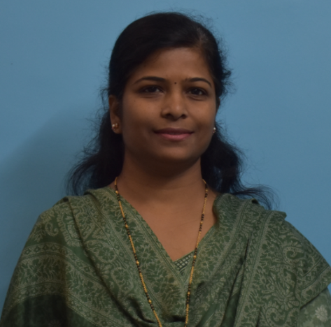
Assistant Professor
Dr. Rakhi Khedkar is an Assistant Professor in the Department of Electrical and Electronics Engineering at MIT World Peace University, Pune, with nearly 23 years of academic and research experience. She holds a Ph.D. and M.Tech. in…

Assistant Professor
Nanomaterials, Catalysis, Biofuels, Flow through Porous Media, Energy

Assistant Professor
Transportation materials, Warm Mix Asphalt, Parking Policy and Demand Studies

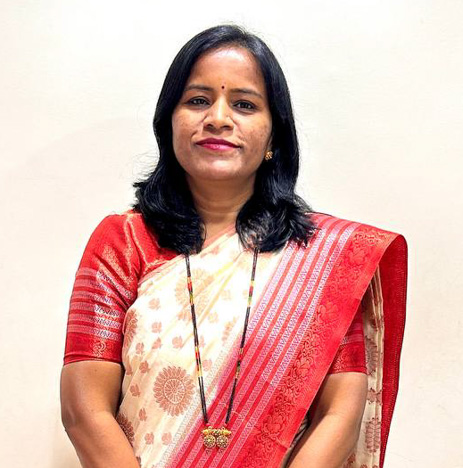


Assistant Professor
Prof. Dr. Ketaki Kulkarni is an esteemed Assistant Professor in the Department of Civil Engineering at MIT WPU, Pune. She graduated from Government College of Engineering, Aurangabad in Civil Engineering in the year 2003, and then…

Assistant Professor
Dr. Mahesh Vasantrao Kulkarni is a postgraduate in Mechanical (Design) Engineering and a Doctorate in Mechanical Engineering from Savitribai Phule Pune University. He is currently working as an Assistant Professor in Department of…

Assistant Professor
Cohort intelligence, Optimization, Nature inspired algorithms, Scocio inspired algorithms

Assistant Professor
Dr. Shraddha Kulkarni is a passionate academician with a wealth of 17 years of experience in engineering teaching and research in Biotechnology. Her experience includes teaching interdisciplinary and application oriented courses like…

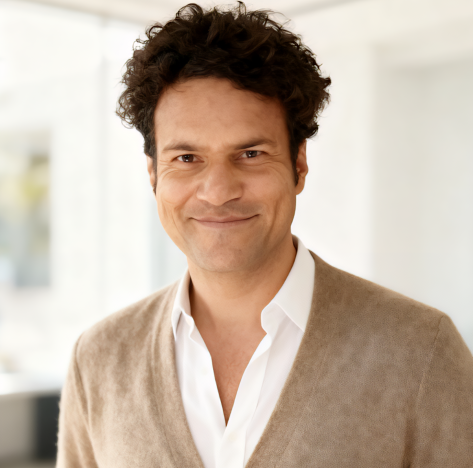
Assistant Professor
Dr. Brijesh Kumar is a developmental biologist with extensive research experience in genome engineering, including CRISPR/Cas, animal models (chicken and zebrafish), and Drug/Target Discovery technologies. After completing his master's…

Assistant Professor
Vortex-induced Vibrations, Drag reduction and Flow Control, Fluid-Structure Interaction, Thermal management of systems

Assistant Professor
Composite Materials, Tribology, Experimental Mechanics, Mechanical Metallurgy

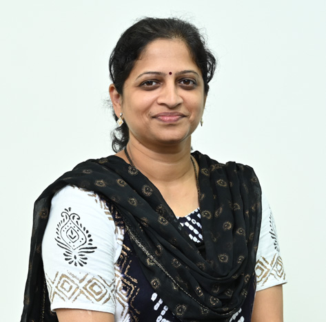
Assistant Professor
Music Signal Analysis and Synthesis, Speech Processing, Pattern Recognition, Computer Vision, Machine Learning


Assistant Professor
Structural Engineering, Precast concrete, Structural Health Monitoring


Assistant Professor
1. CAD /CAM/CAE, Numerical Methods, Advance manufacturing, PLM, Design, FEA, Optimization of product, Micro Forming, and Manufacturing process.

Assistant Professor
Dr. Sandhya Mathapati is working as an Assistant Professor in the Department of Civil Engineering at MIT-WPU, Pune. She has over 19 + years’ academic & industrial experience. She completed her Ph.D. in the Civil Structural Engineering in…

Assistant Professor
Construction Management, Ferrocement , Sustainable construction

Assistant Professor
Dr. Lipsa Mishra is an Assistant Professor in the Department of Civil Engineering at Dr. Vishwanath Karad MIT World Peace University, Pune from September 2024. She completed her B. Tech in Civil Engineering from KIIT Deemed to be…

Assistant Professor
Dr. Kunal Modak holds a Ph.D. in Structural Geology from IIT ISM Dhanbad, where he conducted research on the structural geometry, structural mapping, deformation, paleopeizometry, and metamorphism of the Mesoproterozoic Kaladgi Basin. His…
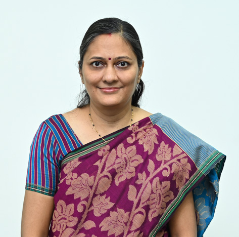
Assistant Professor
Deepa Nath graduated in BE (Electronics) in the year 1997 from WIT, Solapur, Shivaji University. Masters degree completed in the year 2011 in VLSI & Embedded from MITCOE, Pune.
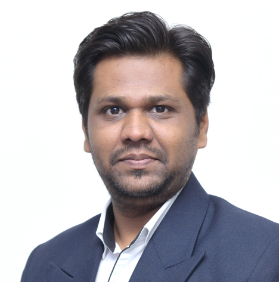
Assistant Professor
Power system protection, electric vehicles, industrial automation, and energy management

Assistant Professor
Polymers, Biomaterials, Biodegradation, Waste management and valorisation, Life Cycle Assessment
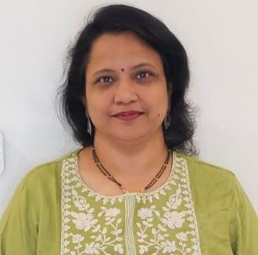


Assistant Professor
Prof. Bhakti Paranjape holds a Bachelor's degree in Electronics from Shivaji University and a Masters in Digital Systems from Pune University. With over 14 years of teaching experience and 2 years of industry experience, she is currently…

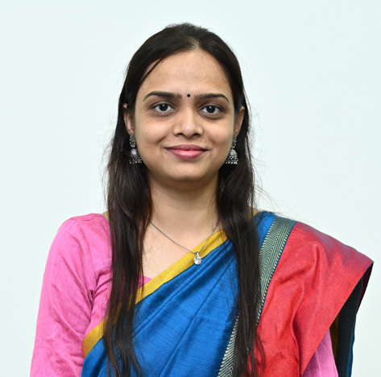
Assistant Professor
wireless communication, Digital communication, Neural Networks, Machine Learning, Data Science, Electromagnetics and Antennas, and Digital signal processing.

Assistant Professor
Crashworthiness, Impact analysis, Design, Non-linear analysis, FEA

Assistant Professor
Dr. Jagruti Patil is a distinguished Assistant Professor in the Department of Civil Engineering at Dr. Vishwanath Karad MIT World Peace University, Pune. She has earned a Ph.D. in Structural Engineering with a specialization in Earthquake…

Assistant Professor
Prof. Ashish Pawar is an Assistant Professor in the School of Mechanical Engineering at Dr. Vishwanath Karad MIT World Peace University, Pune. He has 9 years of experience in teaching and research, as well as 1 year of industry experience.…

Assistant Professor
Biomaterial, Surface modification of biomaterial, Material science, Materials Characterization, Advanced Manufacturing Processes, Nanocomposites for biomedical applications.


Assistant Professor
Dr. Kumar Abhijeet Raj obtained his Ph.D. in Petroleum Engineering from IIT (ISM) Dhanbad. His doctoral research focused on the development of Viscoelastic Surfactant (VES) fracturing fluids for high- temperature reservoirs, integrating…
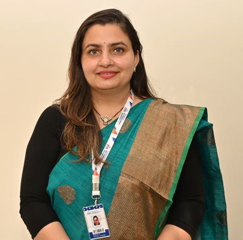
Assistant Professor
Bioethanol, Biocatalyst, lignocellulosic residues, probiotics, and yogurts.
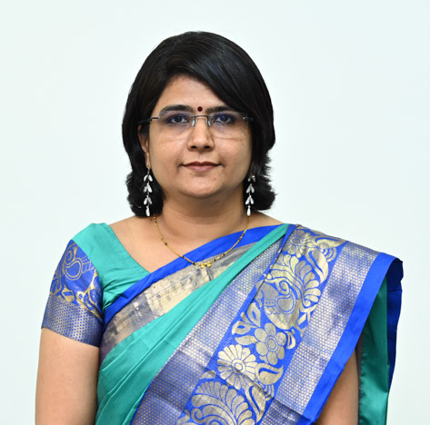

Assistant Professor
Surface Modification, Composite Materials, Solid-state welding

Assistant Professor
Dr. Ajay K. Sahu has completed his doctoral study (Ph.D.) from IIT Kharagpur with special focus on “Characterization of fracture networks from outcrop analogous: A flow simulation approach”. During his doctoral study, He has also carried…

Assistant Professor
Krishna Kumar Saini is an Assistant Professor in the Department of Electrical and Electronics Engineering at MIT World Peace University (MIT-WPU), Pune. He has over 10 years of academic and research experience in the field of Electrical…

Assistant Professor
Dr. Rohit Salgude is an Assistant Professor in the Department of Civil Engineering at MIT World Peace University (MIT-WPU), Pune, with over 14 years of academic experience. He is actively engaged in teaching, research, and academic…


Assistant Professor
Corrosion in reinforced concrete, Fiber reinforced concrete, Steel Structures, Pervious Concrete, Ferrocement Technology, Recycled Aggregate Concrete, Concrete with Admixtures and Non-Destructive Testing

Assistant Professor
1. Energy Storage & Conversion – Development of high-performance lithium-ion and solid-state batteries, supercapacitors, and fuel cells with advanced electrode materials and electrocatalysts. 2. Nanomaterials & Functional Coatings –…

Assistant Professor
Prof. Shubhangi Shekokar is currently an Assistant Professor in the Department of Civil Engineering at Dr. Vishwanath Karad MIT World Peace University, Pune. She received her B.E. in Civil Engineering from Government College of…

Assistant Professor
Dr. Abhaysinha Gunvantrao Shelake is a dedicated Assistant Professor in the Department of Civil Engineering at Dr. Vishwanath Karad MIT World Peace University (MITWPU), Pune. With over ten years of teaching experience, he specializes in…


Assistant Professor
Structural Engineering , Ferrocement construction , Composite Structures , Precast constructure , Waste material based composite .Light weight concrete , Fiber Reinforced Concrete composite .

Assistant Professor
Dr. Mitulkumar Thakorbhai Solanki is an Assistant Professor in Department of Mechanical Engineering at MIT World Peace University, Pune. He completed his PhD in Mechanical Engineering from SVNIT Surat with a focus on Bearing Design and…

Assistant Professor
Building Energy Simulation, Building energy analysis, GIS applications.

Assistant Professor
Dr. Rupali R. Sonolikar is an Assistant Professor with three years of teaching experience. Research interest includes Computational Fluid Dynamics study of granular material in different various engineering systems and the application of…

Assistant Professor
Anant Srivastava is committed to creating a student-centric learning environment that encourages independent thinking, self-confidence, curiosity, and lifelong learning. His teaching philosophy focuses on helping students build strong…


Assistant Professor
Adsorption, membrane separation, polymer composite, green composite, waste management, sustainable processes and renewable energy

Assistant Professor
Biomedical Engineering, Mechanical Design and Finite Element Analysis

Assistant Professor
Separation Processes, Bio-energy (Biofuels, Biodiesel Production, Biochar), Wastewater Treatment, Photocatalysis and Ultrasound

Assistant Professor
Refrigeration and Air Conditioning, Alternative refrigerants, Energy efficiency, Heat Transfer

Assistant Professor
Dr. Shailesh Varade serves as an Assistant Professor in the Department of Chemical Engineering at MIT-WPU, where he focuses on bridging rigorous scientific thinking with practical application. Drawing from his research in soft matter,…

Assistant Professor
Dr. Sushrut H. Vinchurkar is an Assistant Professor in the Department of Civil Engineering at Dr. Vishwanath Karad MIT World Peace University, Pune. He received his Doctorate in Philosophy with specialization in Water Resources Engineering…

Assistant Professor
Dr. Vinayak S. Wadgaonkar has completed his doctoral study from L.I.T. nagpur. His doctoral study was focused on Studies on Removal of Heavy Metals By Low Cost Adsorbents. During his doctoral study, he has also carried out collaborative…

Assistant Professor
Dr. Makrand Wagale is an Assistant Professor at the Department of Civil Engineering, MIT World Peace University in Pune. He completed his B.E. in Civil Engineering from Walchand College of Engineering, Sangli, and his M.E. and Ph. D in…
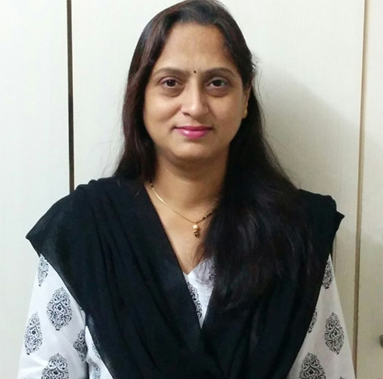


Assistant Professor
Rigidity Analysis of structures, Optimization, Offshore Structures


Laboratory Assistant
Nikhil Dattatray Deshmukh has pursued M.Sc in Analytical Chemistry from Bharati Vidyapeeth Deemed University, Pune. He also holds a B.Sc in Chemistry degree from the same university. He is now working as a Lab Assistant at MIT World Peace…